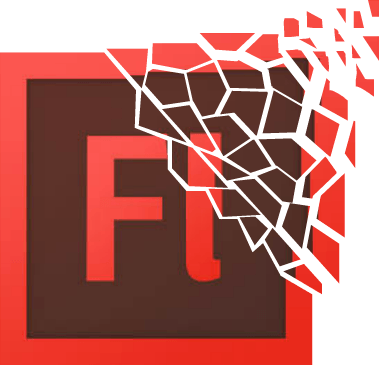
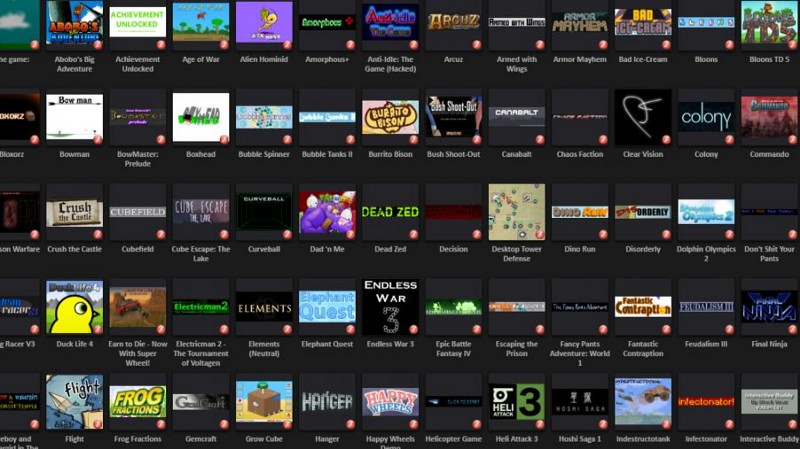

Генеральный директор и сооснователь Apple Inc. Стивен Джобс перед своей кончиной в 2010 году написал Adobe открытое письмо, рассказав о том, почему Flash не поддерживается в мобильных устройствах Apple — iPhone, iPad и iPod. Если вкратце, то там было написано следующее: будущее настало, и вы устарели. Flash был создан в эпоху PC, он рассчитан на PC и управление мышью. Flash — это успешный бизнес для Adobe, и мы понимаем, почему компания стремится распространить его за пределы PC. Но эпоха мобильных — это время устройств с низким энергопотреблением, сенсорных интерфейсов и открытых веб-стандартов. Во всех этих областях Flash не оправдывает ожиданий.
Более того, Flash player заработал печальную известность своей тормознутостью и подверженностью ошибкам, ухудшавшим большинство веб-страниц. Некоторые считают смерть Flash благословением, потому что пользователи Интернета получили более быструю и надёжную всемирную сеть. Даже такие веб-сайты, как Newgrounds, Addicting Games, Kongregate и Miniclip, на протяжении долгих лет использовавшие Flash во всём своём контенте, начали постепенный уход от него из-за всех его недостатков. Однако угасание Flash, по словам основателя Newgrounds, заметной фигуры эпохи Flash-игр, не стоит воспринимать как праздник: Меня очень расстраивает, когда люди радуются смерти Flash. Я полностью понимаю, что пора двигаться дальше, но не стоит восхвалять смерть той технологии, которая давала возможности такому большому количеству людей и несла в веб множество развлечений на протяжении 20 с лишним лет.
Конец эры Flash всё равно будет временем траура, особенно для тех игр, которые невозможно спасти. Flash повлиял на индустрию видеоигр, и утеря его забытого контента будет означать и утерю части истории ранних видеоигр.

Бен Лэтимор, член Archive Team Джейсона Скотта, известный архивированием цифровой истории, обеспокоен состоянием Flash-контента в Интернете. Видя, что никто не предпринимает усилий по спасению этих разрушающихся реликтов эры Flash, он взял эту обязанность на себя. BlueMaxima Flashpoint — это программа, являющаяся «всеобъемлющим архивным проектом, музеем и играбельной коллекцией Flash-игр»: любой может снова сыграть во Flash-игры без установки ПО.
«Adobe Flash (ранее Macromedia Flash) — это одна из крупнейших сокровищниц не сохранённой сегодня игровой истории. За двадцать лет были созданы десятки тысяч игр, библиотека Flash-игр по глубине и ширине пережила любую игровую консоль на рынке. И всё это может пропасть через два года… Если никто не ничего не сделает, то мы можем потерять навсегда огромный кусок истории. Эти игры заслуживают большего. Намного большего».
Архивирование Flash-игр означает сохранение игровой истории. Волонтёры и участники проекта проводят беспрецедентную совместную работу по консервации Flash-игр до их постепенного исчезновения.
Дни Flash медленно подходят к концу, но их интересность, креативность и влияние, оказанное ими на Интернет, никогда не угаснут. То же самое я могу сказать о своих воспоминаниях Flash-игр, в которые я играл со своими друзьями в школьной библиотеке. Авторы и идеи, возникшие благодаря этому ПО, продолжат жизнь в архивах, которые сохранятся как заметная веха в истории видеоигр.
